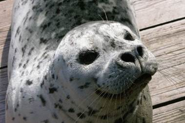
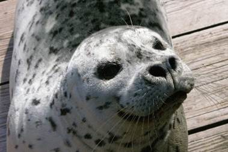

March 2025 🌊🌸🎵🍜
Dear friends and family – we are a quarter of the way through 2025!
March was full of sun, and Seattle’s fake spring had me choosing between t-shirts and sweaters (I usually picked wrong). Between the rain and shine, I kept busy! In the future, these newsletters might get shorter…
Barney
Many of you know about my volunteer work at the Seattle Aquarium. Over the years, I’ve gotten to know the aquarium’s marine mammals, including Barney the harbor seal. On the rare warm days, I would sit outside with him and stare down seagulls that got a little too close for comfort. Barney was born in 1985, and at 39, he was the human equivalent of 100 years old. Unfortunately, volunteers at the aquarium faced an abrupt goodbye when Barney passed away in mid-March.
While Casey and Hogan (Barney’s harbor seal roommates) chased each other around in circles, Barney preferred to meander along the windows of the harbor seal habitat. His long whiskers helped him navigate, even when his eyesight worsened with age. Sometimes, I wish I had whiskers to make up for my terrible vision. But maybe it’s for the best–whiskers would not vibe with my outfits (or would they?)
I learned a lot from Barney, like how harbor seal nostrils are naturally closed and why harbor seals are the BEST at the worm. I also learned a lot from his death. I hate to admit it, but I often skipped the outdoor harbor seal habitat in favor of the warm indoors. I took Barney’s presence for granted, and I didn’t realize the surprising impact he had on my life until recently. Summers on Pier 60 won’t be the same without him.
 

Music March
Whether I was attending choir festivals or concerts, March was a month of singing. I listened to so many amazing choirs singing operas, folk songs, or heartfelt pieces. In certain places, under certain conditions, with certain choirs, sound takes on a life of its own. It brightens the space with harmony, and its presence affects everyone in the room.
I’m trying to sing more in everyday life. I sing at my desk, I hum in the shower, and I respond to birds as they sing from outside the window. Unlike other musical instruments, my vocal cords are part of my body. When I’m sick or bored or too tired to care, my energy literally changes how I sound. Singing, for me, is a way to express my emotions through music. I’m looking forward to the warm spring afternoons of April and May. I know for a fact that my voice will change as the days lengthen and brighten.
Heritage Week @ School
It would be impossible to fit a whole week’s worth of activities in one newsletter. For now, here are some highlights:
- Cultural Fashion Show
- The HNA community truly showed up for this event. I loved the energy, the cultural attire, and the “STRUT STRUT STRUT” being shouted through the auditorium. This was the first Fashion Show hosted by the Multicultural Student Union, but I suspect it will become a tradition for many more years to come.
- Spicy Ramen Challenge
- I can think of a few other words to describe Buldak ramen other than “spicy”: painful, soul-scorching, uncomfortably warm, tear-inducing, needle-like, red hot.
- And that was when I ate approximately 10 noodles.
- Other than a few impromptu tears, Taste of HNA was wildly successful. I was so stuffed by the end, my stomach even hurt a teeny tiny bit (it might’ve been from the ramen, though). Armed with two massive pots of spicy ramen and a few hundred tiny cups, the Asian American Student Union truly tackled this challenge.
Before I close up this month’s newsletter, enjoy this Instagram post summarizing Heritage Week 2025: https://www.instagram.com/p/DH7F1XKSBL3/?utm_source=ig_web_button_share_sheet&igsh=MzRlODBiNWFlZA==
What are your favorite things to do in Spring? What have you been up to? Let me know–
Lots of love, Julia